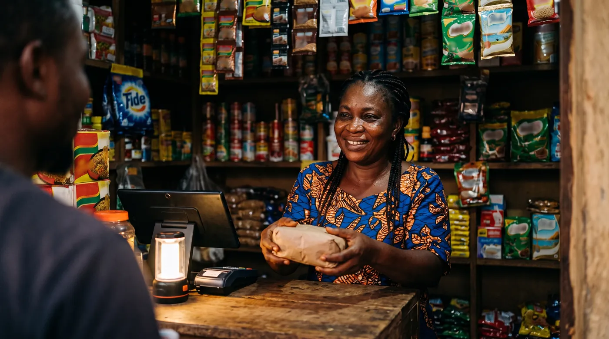

Offline POS system: keep selling when the network is down
Nigeria's national grid collapsed on December 29, 2025. Then again on January 23, 2026. Then a second time that same January. Add the ordinary days when light is off, data has finished or the network is simply crawling, and you get the real question behind this article: when the connection goes, can you still take money?

Almost every POS app puts "works offline" somewhere on its website. Almost none of them explain what that covers. So owners assume they are protected, discover they are only half protected, and find out on the day the queue is longest.
This guide gives you the distinction that matters, the list of what actually stops, and a five-minute test you can run yourself before you pay anybody. We do recommend one option at the end, and we tell you exactly why.
First, the word POS means two things here
Worth clearing up before anything else, because it sends people to the wrong answers.
In Nigeria most people say POS to mean the agent banking terminal, the one you use to withdraw cash, send a transfer or pay a bill at the kiosk down the road. Shop owners also say POS to mean the till in their own shop, the software that rings up a sale, prints a receipt and tracks stock.
This guide is about the second one.
The mix-up has cost people real worry. When the CBN issued its 2025 Agent Banking Guidelines limiting an agent to one principal bank or fintech, many read it as applying to every terminal in the country. Reporting on the guidelines states they do not restrict ordinary merchants taking payment in their own shop. If you sell goods rather than run an agent point, that rule was never about you. Check your own situation with your bank or a professional rather than with a WhatsApp broadcast.
The two jobs people mix up
An offline mode does two very different things, and only one of them is really up to your software.
Recording the sale. Pulling the right price, taking it off stock, printing the receipt, noting how the customer paid. Good software keeps all of that on the phone or tablet itself. No reason for it to stop.
Getting the payment authorised. A card or a bank transfer has to reach the customer's bank to confirm the money is there. That request travels over a network. Cut the network and there is no authorisation, so no card payment and no transfer confirmation. Your till software cannot fix that, whichever one you buy.
Keep the sentence, it will save you an unpleasant afternoon. Your till can record a sale with no network. It cannot get a card approved with no network.
What you can choose is whether to add a second network dependency on top. A till that pushes you onto its own payment processor adds one, exactly when you least want it. digabloPos forces neither a processor nor a commission on what you collect, so you stay free to take cash or a transfer while the card waits for the network to come back.
What actually stops when you go offline
The honest answer is that it depends on the software, which is precisely why you read the documentation instead of the sales page.
Take Loyverse, one of the free tills most widely used across Africa, because its public documentation is unusually specific. As of August 2026 it states that in offline mode:
| Keeps working | Stops working |
|---|---|
| Recording sales | The refund button, disabled |
| Opening and closing shifts | Creating or editing a customer |
| Receipts, stored on the device | Showing stock levels |
| Syncing, once the network returns | Negative stock alerts |
Based on Loyverse's public documentation as consulted in August 2026. Features change, so confirm the current position with the vendor before you decide.
Read that second column against your own day. No refunds means an unhappy customer standing in front of you. No new customer record means the man who wanted to open an account walks away. No stock figure means you are selling blind.
None of it is a deal breaker. It is just much better known in advance. And credit where it is due: a vendor who publishes this list is helping you plan. A vendor who stays vague lets you discover it mid-outage.
What happens when the network comes back
Sales made without a connection are held on the device and go up on their own once you are back online. In Loyverse those receipts are marked as unsynced, so you can check at a glance.
The danger is not the upload. It is the window before it.
Until they sync, that trading exists on one phone and nowhere else. If it drops in water, if it is stolen, if a staff member uninstalls the app or clears its data because "it was hanging", the day is gone. Three habits during a long outage: do not switch devices, do not uninstall anything, and before you close on the evening the network returns, confirm everything has actually gone up.
Two staff selling offline at once
The least discussed part of offline mode, and no brochure mentions it.
Once the connection drops, each device carries on with its own copy of the data. Till A cannot see Till B's sales and the other way round. After a handful of sales the stock number on both screens is wrong, and you can comfortably sell the last item twice.
There is no clever fix, only an arrangement. During an outage make one till the reference for anything you are running short of, and let the other one take money only. And put the question to the vendor before you buy: what happens to stock when two tills sell the same item offline? How well they answer tells you a lot.
The five-minute test, before you pay anybody
No brochure replaces this. Do it during the free trial, on your own device, not the salesman's.
- Put the phone or tablet in aeroplane mode, and switch wifi off too.
- Ring up three different sales, with three different payment types, one of them with a discount.
- Print a receipt, if you have a printer.
- Fully close the app, not just the screen. Everyone skips this step, and it is the one that exposes weak products.
- Reopen it, still offline. Your three sales must be there.
- Reconnect, wait a minute, then open your reports from a different device or a laptop.
All three sales should appear, with the right amounts and the right payment types. If one is missing, or a figure has moved, you just saved yourself months of trouble.
A real offline mode survives the app being closed. A fake one just keeps the screen showing.
Run this on every till on your shortlist, including the one we recommend. Since the base plan of digabloPos is free for life, you can install it and put it through all six steps tonight, with nothing to pay and no card details.
Cash, transfer and the payment side
Two practical points for the days the grid or the network lets you down.
Cash is the only payment that needs nothing at all. Keep enough change to trade through an outage, because that is exactly when nobody can send you a transfer.
Mobile money and bank transfers ride on the operator or bank network, not on your till software. Sometimes the mobile network is still standing when fixed internet is not, so you may still get paid that way. What your till has to do is record that sale as its own payment type, separate from cash, otherwise your count at closing mixes what is in the drawer with what landed in an account and you lose track.
One thing to watch. A till that forces you onto its own payment processor takes a cut of every sale and adds one more network dependency at the precise moment you least need it.
And one point that often decides a long outage. When the card will not go through and the customer does not have enough cash on him, you either lose the sale or you put it on credit. You still need somewhere clean to record it. digabloPos has customer credit built in, with a record and a running balance per person, so you are not managing that on a scrap of paper while the counter is already under pressure.
What to choose
On this criterion specifically our pick is digabloPos, and here is the reasoning rather than just the verdict. An outage hits you on three fronts at once: you have to keep recording, you lose card payment, and the customer standing in front of you still has to leave with his goods. A till that covers all three, without forcing a processor on you and without taking a cut, saves the day. The two other options below each have their place, and we say which.
digabloPos
digabloPos runs offline with automatic sync when the network returns, on a base plan that is free for life. Two things matter here. It forces no commission and no payment processor, so it adds no extra network dependency to how you get paid and you stay free to take cash or a transfer. And it handles customer credit, which is worth a lot during a long outage, when a regular cannot pay by card and you would rather not lose the sale.
👍 Strengths
- Offline mode with automatic sync
- Free-for-life base plan, no lock-in
- No forced commission or payment processor
- Built-in customer credit, useful when cards will not go through
- Sales and stock visible remotely
👎 Check for yourself
- Run the five-minute test on your own device
- Card payment still depends on your bank's network, as everywhere
- Some advanced modules are paid
Loyverse
A genuinely free base version, widely used across Africa, and on this particular subject an honest set of documentation: the vendor publishes exactly what does and does not work offline. That counts in its favour when you compare. Weigh the limits listed above against how you actually trade. If you refund often, or open credit accounts for new customers at the counter, think it through first.
👍 Strengths
- Free on the base plan, long track record
- Offline limits clearly documented
👎 Check for yourself
- Several functions unavailable during the outage, match that against your day
- Ask the vendor how stock behaves with two tills offline
A notebook, as backup
Keep one under the counter. Not as your system, as your net. The day the device itself dies or the battery finishes during a long outage, the notebook is the only thing still running. Write the amount, the payment type, and the customer's name if it is on credit, then key it in that evening.
👍 Strengths
- Depends on nothing, not network, not power
👎 Limits
- Manual re-entry, so mistakes creep in
- No stock tracking at all
Try a till that works with no network
Our No.1 has a free-for-life base plan, runs offline, and takes no commission on what you collect.
Try digabloPos freeFrequently asked questions
Can I still sell when there is no network?
Yes, if your till software has a real offline mode. It keeps your products and prices on the device, so you ring up the sale, print the receipt and record how the customer paid. Everything uploads when the connection comes back. But that only covers recording the sale. Getting a card or a bank transfer authorised needs a live connection to the bank, and no till software can change that.
In Nigeria, does POS mean the agent terminal or the shop till?
Both, and that is exactly why this gets confusing. Most people say POS to mean the agent banking terminal used for withdrawals and transfers. Shop owners also say POS for the software that rings up sales and tracks stock. This guide is about the second one, the till in your shop. Worth knowing: the CBN's 2025 Agent Banking Guidelines, which limit an agent to one principal bank or fintech, were widely misread as applying to every terminal. Reporting on the guidelines states they do not restrict ordinary merchants accepting payment in their own shop.
Why does the card or transfer fail while my till still works?
Because they are two separate jobs. Your till records the sale on the device itself. The payment terminal has to reach the customer's bank to ask whether the money is there and to hold it, and that request needs a network. No network, no authorisation, so no card payment. Loyverse documents this plainly in its help centre: integrated payment terminals do not work offline, while sales themselves keep being recorded.
What exactly stops working when my POS goes offline?
It depends on the software, which is why you should read the documentation and not the sales page. Loyverse, for example, publishes the list: while offline the refund button is disabled, you cannot create or edit a customer record, and stock levels are not displayed. Sales and shifts carry on. An owner who refunds often, or who opens credit accounts for new customers, should weigh that carefully.
What happens to sales I made with no network?
They sit on the device. In Loyverse the receipts are marked as unsynced and upload automatically once the connection returns. The risk is not the upload itself, it is the window before it. Until those sales have synced they exist on that one phone. If it is lost or stolen, or if somebody uninstalls the app or clears its data to fix a glitch, that trading is gone.
How do I test a POS offline myself before buying?
Do it during the free trial, on your own device, in five minutes. Put the phone or tablet in aeroplane mode and switch off wifi. Ring up three sales with three different payment types, print a receipt if you have a printer, then fully close the app, not just the screen. Reopen it while still offline: your three sales must still be there. Then reconnect and check them from a second device. If one is missing or an amount moved, you have your answer.
What if two staff are selling offline at the same time?
This is the case nobody explains and the one that costs you stock accuracy. Each device works on its own copy, so neither sees the other's sales while the network is down. The stock figure on both screens drifts, and you can sell the last item twice. Ask the vendor directly what happens to stock when two tills sell the same item offline, and if you run two points, make one of them the reference for anything you are short of.
Stop losing sales to outages
Set up a free till that records your sales on the device and syncs on its own when the network returns.
Create my free till